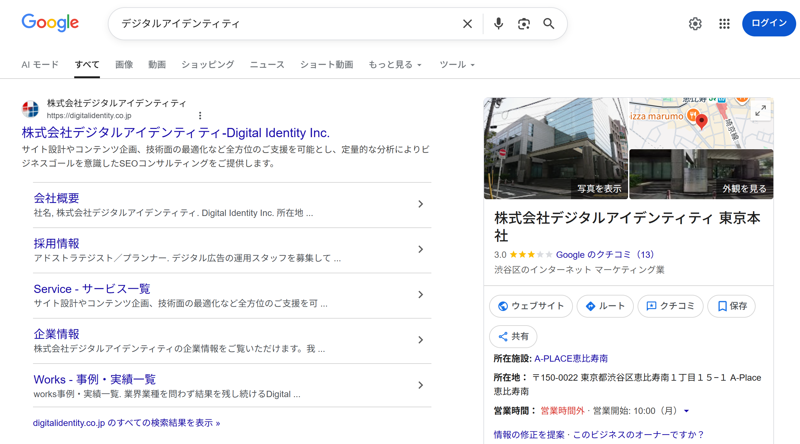

ローカルSEO
基本：ローカル検索の仕組み、評価指標、実践：Googleビジネスプロフィールの最適化・クチコミ管理
基本：ローカル検索の評価指標と検索結果の種類
通常のGoogle検索アルゴリズムは、ランキング要素や重み付けが公開されていませんが、ローカル検索に関しては、Googleが公式に評価指標を公開しており、施策の方向性を立てやすくなっています。
関連性（Relevance）
検索クエリと、ビジネスプロフィールやWebサイトの内容がどれだけ一致しているかを示す指標。
距離（Distance）
検索クエリに含まれるエリア、またはユーザーの現在地から、ビジネスの所在地までの物理的な距離。
知名度・視認性（Prominence）
オンライン／オフラインでのビジネスの有名度や信頼性。口コミの数・評価、被リンク、サイテーション（言及）などが影響する。
Googleが公式に明言しているローカル検索の評価指標は「関連性」「距離」「知名度」の3つですが、ローカル検索においてもコンテンツの品質やE-E-A-Tは基本になります。たとえば、閉店した店舗が「営業中」と表示されているなど、不正確な情報は検索品質評価ガイドライン上「信頼できない」と判断される対象になるとされています。
ローカル検索に対する検索意図（Visit-in-Person query）だとGoogleが解釈した場合、検索結果には次のような形式が表示されます。
ローカルパックはGoogleビジネスプロフィールの情報が基になっており、検索クエリの種類によって、口コミ・写真が大きく表示される「ローカルスナックパック」（飲食・サービス系）、評価を含まない「ローカルABCパック」（ブランド名・チェーン店など）といったバリエーションがあります。また、企業名・施設名など固有名詞での検索では、Wikipediaや公式サイトなどの情報を基にしたナレッジパネルが表示されることもあります。

2015年以降、ローカルパックは通常の検索結果（自然検索枠）よりも上位に表示されることが増え、特に飲食店・美容院・宿泊施設などのカテゴリでは目立つ位置に定着しています。ローカル性のあるキーワードでは、通常のオーガニック検索対策だけでなく、ローカルパックへの対応が集客上重要になります。